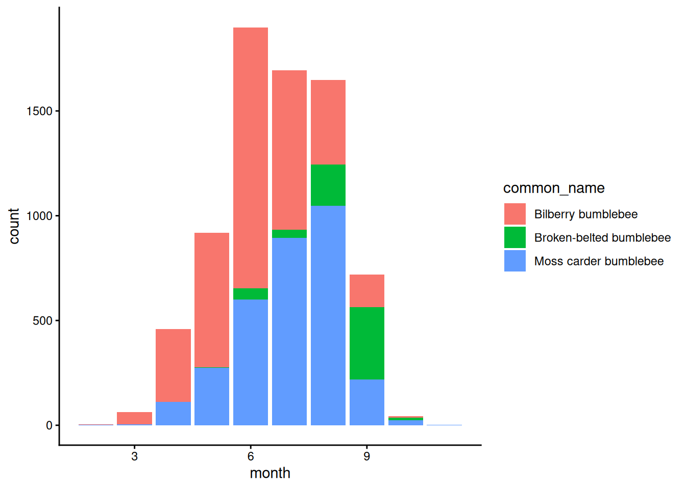
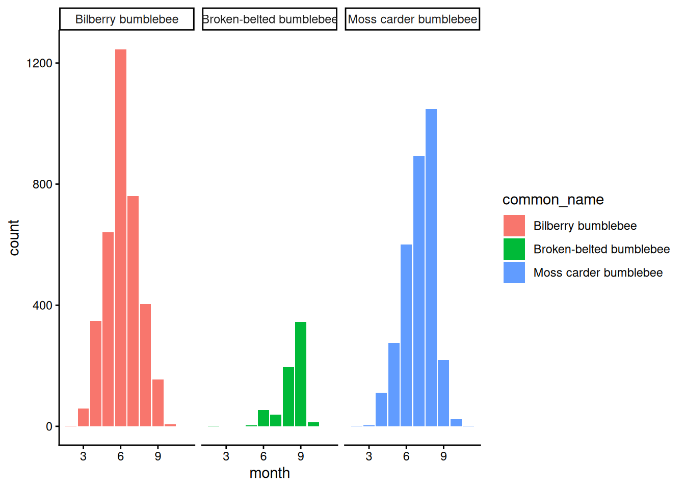
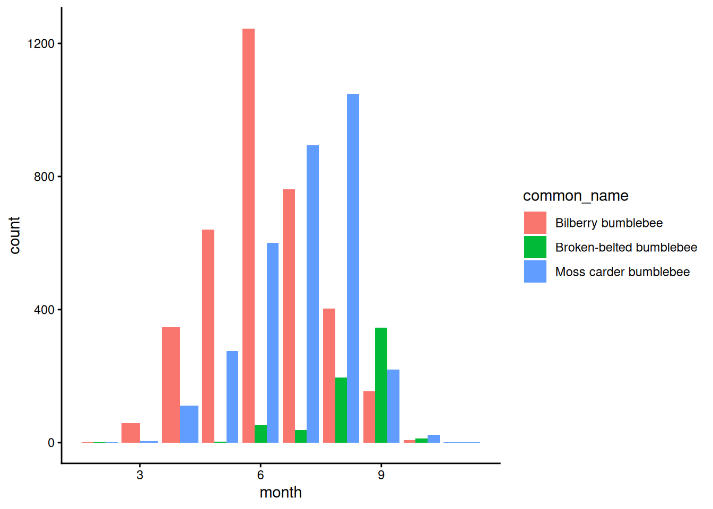
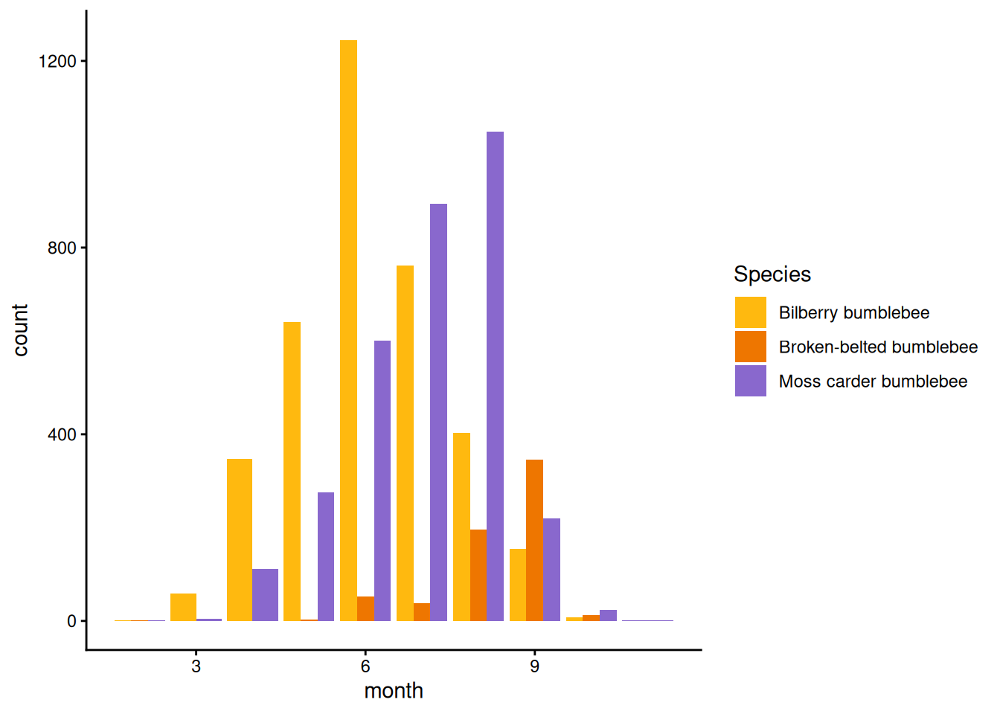

28 Seasonal timing
Next let’s look at the seasonal timing for each bumblebee species.
28.1 Creating a table grouped by two factors
We’ll need to convert our data from a data frame where each observation is a single row, to a table format where we have the total number of data points for each month.
In previous practicals, we’ve used the table() function to do this.
Unfortunately, the table() function won’t work now because we need separate tallies for each species in each month.
However, we can use the summarise() function, group by both variables, and then use the length() function to count the number of observations in each group.
It doesn’t matter what variable we put inside the length() function, because all of the columns in a given dataframe have the same number of rows!
28.2 Stacked vs. grouped column plots
Start with a basic column plot, where:
- month is on the x-axis
- count is on the y-axis
- the colour of the bars is determined by species - remember where it goes when it is being determined by a variable!
Tip! For columns, the main colour is set by fill = instead of colour =.
(The latter sets the colour of the outline of the column.)
#> Warning: Removed 1 row containing missing values or values outside
#> the scale range (`geom_col()`).
Question: Does the figure look the way you expected?
(Ignore the message for now. It’s not an error, just a warning, however we’ll address it shortly.)
The graph above is called a stacked column plot.
A stacked column plot is the default for R when you give it data from multiple categories.
This is very good for showing us the overall seasonality of bumblebees, but makes it a bit hard to see how the seasonality of each species differs.
Most of the time we want to be able to see each category separately.
One way to do that would be to simply add a facet_wrap(vars()) layer to the end to create three different panels.
Tip! Remember that the variable that you are splitting into separate panels goes inside of vars().
#> Warning: Removed 1 row containing missing values or values outside
#> the scale range (`geom_col()`).
Question:
We’re getting an warning message that says “Warning: Removed 1 row containing missing values or values outside the scale range (geom_col()).”
Can you look at your input data to figure out why we’re getting this error? How might you get rid of it?
It seems like there are some occurrences that don’t have month data associated with the, so R has filled in the value NA.
Tip! Remember that you can use the na.omit() function to remove all rows with any NA values.
mydf_narm <- na.omit(mydf)
28.2.1 The dodge command
A better idea is to turn our plot from stacked column plot into a grouped column plot
It will be much easier to compare the patterns of each species if the values for a given month are adjacent to each other.
Copy and paste your original stacked column plot (without the facet_wrap() and then add the argument position = "dodge" to the geom_col() function.
month_fig <- bee_month_table |>
ggplot(aes(x = month, y = count, fill = common_name)) +
geom_col(position = "dodge") +
theme_classic()
print(month_fig)
#> Warning: Removed 1 row containing missing values or values outside
#> the scale range (`geom_col()`).
Now we can really see how the seasonal patterns differ by species!
Change the colours and legend label so they match your previous geographic figure.
Tip!
You will have to use a slightly different function here - scale_fill_manual() instead of scale_colour_manual() because column colours are determined by the fill = aesthetic instead of colour =.
month_fig <- bee_month_table |>
ggplot(aes(x = month, y = count, fill = common_name)) +
geom_col(position = "dodge") +
scale_fill_manual(values = c("darkgoldenrod1", "darkorange2", "mediumpurple3")) +
labs(fill = "Species") +
theme_classic()
print(month_fig)
#> Warning: Removed 1 row containing missing values or values outside
#> the scale range (`geom_col()`).
Question:
Which species peaks earliest in the year? Latest?